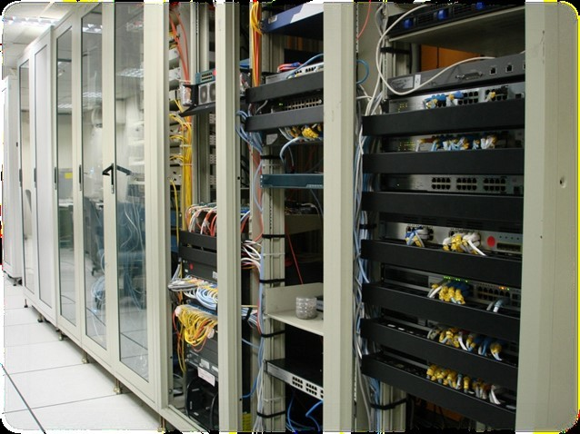
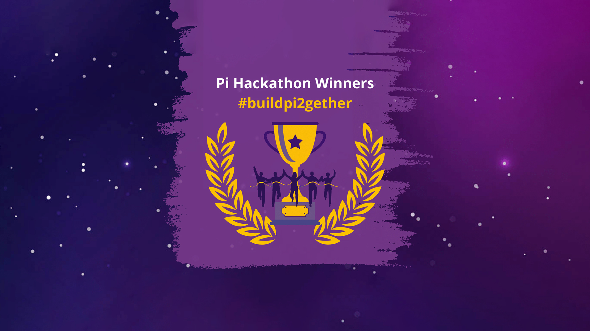

LINUX CLUB
Beyond the typical desktop experience, Linux is the backbone of modern computing—powering the majority of web servers, supercomputers, and cloud technologies that run the digital world. The Linux Club at JKUAT is a dedicated community for students who are curious about free and open-source software and want to explore its endless possibilities.
Who Can Benefit
- School teachers/ administrators looking to offer fun and educational activities
- Local computer classes for teenagers/ seniors/ second career
- Veteran education & training programs
- Linux User Groups
Linux Club make learning technology enjoyable
Linux club make learning technology enjoyable. Club programming prepares members for rewarding careers and engaging hobbies. We encourage community service and involvement, entrepreneurship, innovation and learning-by-doing. We also provide members with social networks that can last a lifetime.
Working with Open Source software further encourages…
- an ethos of sharing
- collaboration
- shared accomplishment
While club members are having fun with computing, they can be laying the groundwork for fulfilling, high-paying careers working with Open Source.
Why Join the JKUAT Linux Club?
-
Hands-on Workshops:
Gain practical experience with installations, system administration, and command-line tools. Our workshops are designed to take you from a curious beginner to a confident user.
-
Career-Ready Skills:
Master a highly sought-after skill set for careers in cybersecurity, DevOps, cloud computing, and software development. Linux knowledge is a key requirement for top tech jobs.
-
Open Source Community:
Become a part of the global open-source movement. Contribute to projects, collaborate with peers, and learn the collaborative spirit that drives modern technology.
-
Expert Mentorship:
Connect with experienced students and faculty who are passionate about Linux. Get personalized guidance and support to help you tackle complex challenges and grow your skills.
Our Projects
The Linux Club is a hub for innovation. We focus on real-world projects that not only build our skills but also give back to the community. Some of our recent projects include:
-

Server Setup for Campus: Our members successfully set up and configured a web server for a university project, gaining hands-on experience in networking and security.
-

Custom Kernel Development: A team of students collaborated on a project to compile and customize their own Linux kernel, exploring the deep internals of the operating system.
-

Hackathon Wins: Our club members have consistently performed well in local hackathons, leveraging their Linux expertise to build innovative solutions for challenging problems.
How to Get Involved
Ready to get started? Joining the JKUAT Linux Club is easy!
-
Where We Meet: ICT Innovation Centre, Lab 3 When We Meet: Every Wednesday from 4:00 PM to 6:00 PM - Stay Connected: Follow us on social media for updates and resources.
Join us and start building a strong foundation for a fulfilling career in tech!